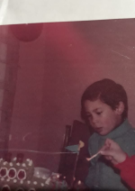
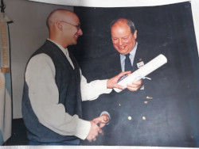
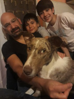
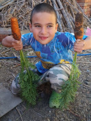
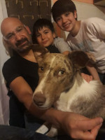
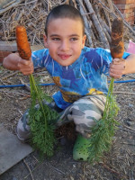

Nombre: Andrés Leandro.
Apellido: Corvalan.
Fecha de nacimiento: 06 de agosto de 1977.
Edad: 45 años.
Nombre: Andrés Leandro.
Apellido: Corvalan.
Fecha de nacimiento: 06 de agosto de 1977.
Edad: 45 años.
Email: alcorvalan@gmail.com.
Celular: 294-4814948.
Domicilio: Belgrano 386 - Maquinchao - Río Nerio.
Establecimiento: Escuela Primaria N° 4.
Localidad: Maquinchao.
Establecimiento: E.N.E.T N° 1.
Localidad: Gral. Roca.
Titulo: Tecnico en Computación.
Promedio: 8,50.
Establecimiento: U.N.C (Univeridad Nacional del Comahue).
Localidad: Neuquén.
Titulo: Analista en Computación.
Promedio: 8,55.
Lenguajes de programación: Pascal, C, C++, Java, Smalltalk, Assembler, Prolog, C++, Haskell, etc.
Base de Datos Relacional: MySQL.
Sistemas Operativos: Microsotf Windows, GNU Linux (Desktop y Server).
Desarrollo Web: HTML5, CSS3, PHP.
Ofimática: Microsoft Office, OpenOffice/LibreOffice.
Mantenimiento de PC (Software y Hardware): Armado de PC, Mantenimiento de sistemas Windows y Linux.
Sistema Educativo: Armado de redes, Instalacion de servidor Linux, dictado de clases de Informatica Contable, Tecnologia y Matemática.
Actividad Privada: Armado de redes, Instalacion y administración de servidor Linux.
Escuela Secundaria ESRN Nº 57:
Ayudante de Cl. y TP en informática (TIC) (desde 2006 a la fecha).
Profesor de “Informática Contable I y II” (desde 2014 hasta 02/2018).
Profesor de “Tecnología” (ciclo lectivo 2016).
Profesor de “Matemática” (desde el ciclo lectivo 2019 a la fecha).
Escuela Primaria Nº 4:
Referente Escolar TIC. (ciclo lectivo 2018).
Escuela primaria de JE Nº 363:
Referente Escolar TIC. (desde ciclo lectivo 2018 a la fecha ).
Cooperativa Telefónica Maquinchao (desde 2004 hasta 2015).
Cooperativa Telefónica Los Menuco (desde 2011 hasta 2018).
Ente de Desarrollo de la Línea y Región Sur de la Provincia de Rio Negro. Desarrollo e implementacion de software.
Nací en Maquinchao, un pequeño pueblo en la provinicia de Río Negro, el 6 de agosto de 1977. Pasé mi infancia allí, hasta los 10 años, y por ello fue muy buena, sin saber lo que era estar preocupado, jugando con muchos amigos en un ambiente seguro y tranquilo ... vida de pueblo.
Empecé el primario en la escuela del pueblo, en aquel momento la única, la N° 4. A los 10 años nos mudamos a General Roca y continué en la escuela N° 253. El cambio de ambiente (pueblo-ciudad) no fue fácil pero favoreció mi educación, pues tuve la posibilidad de hacer el secundario en la ENET N°1, con la orientación "Computación". Al egresar ya tenía las herramientas para comenzar a trabajar, aunque gracias al esfuerzo familiar no fue necesario e inicié la carrera Analista en Computación en la Universidad Nacional del Comahue, que se dictaba en Neuquén. Aun recuerdo los eternos viajes diarios en colectivo (3 hs), todo un esfuerzo personal pero también económico, años siguientes hubo que elegir qué día ir.
Finalizada la carrera de Analista, con muy buen rendimiento académico, seguí con algunas materias de la Licenciatura en Ciencias de la Computación, que lamentablemente no terminé (deuda pendiente!) debido a que decidí volver a mi pueblo; conseguí trabajo, con mi pareja iniciamos una familia, en fin... situaciones que hicieron muy difícil poder continuar esa carrera.
Pero nunca dejé de estudiar, me he vuelto autodidacta, hoy en día solo necesitas acceso a Internet para obtener información.
Mi familia está constituida por mi pareja Leticia Bargas, mis hijos Franco y Fiorella, y mis mascotas (Eros, Mateo, Cachorra y Tigresa).
 


